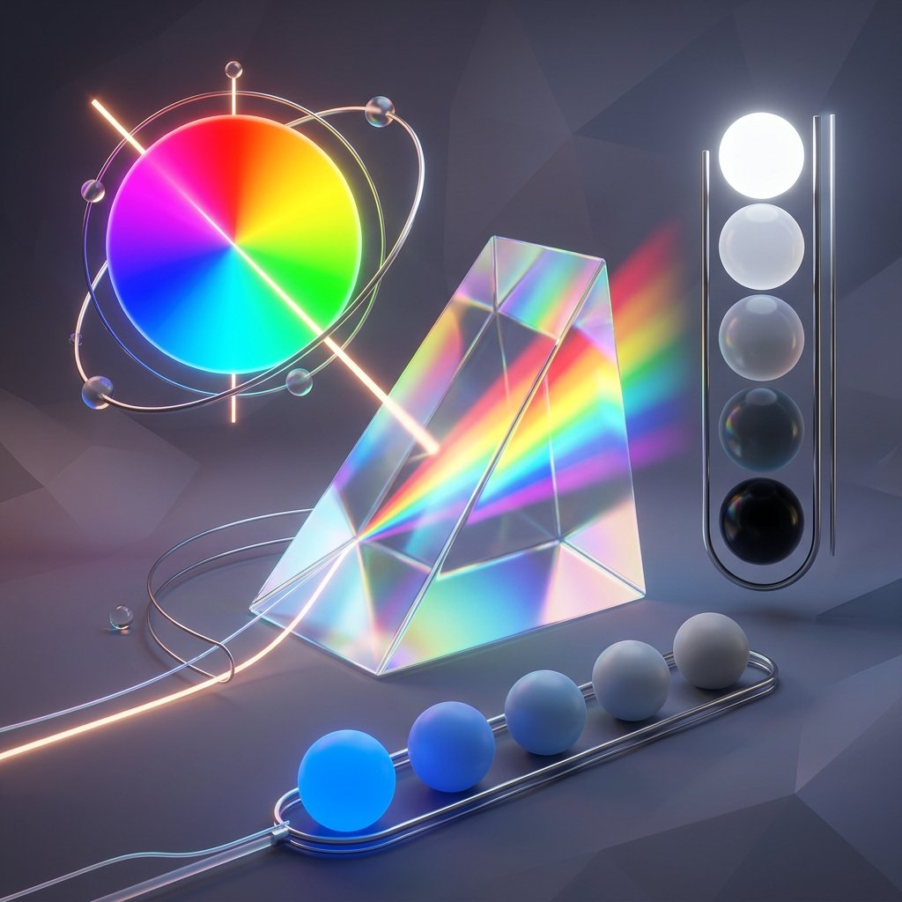
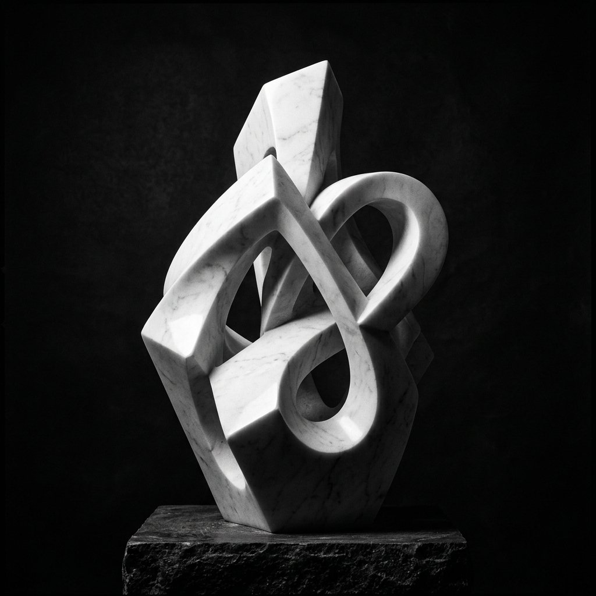
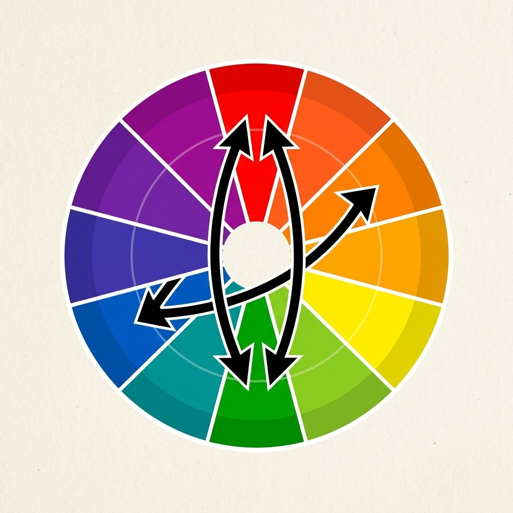
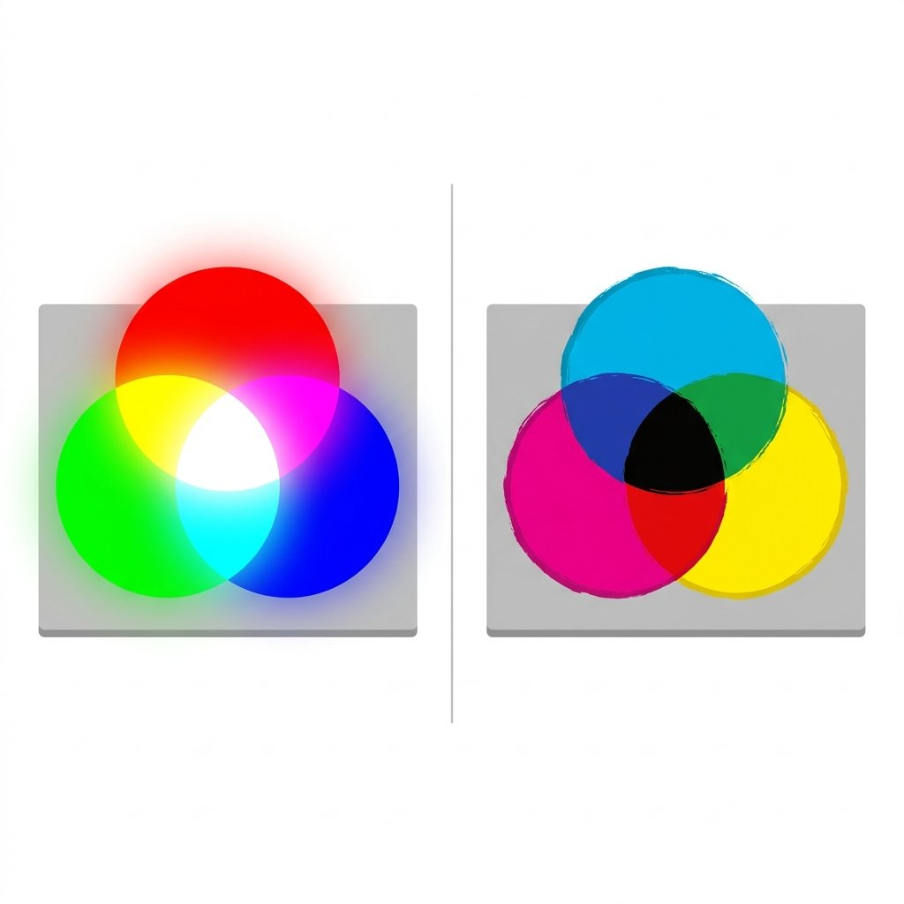
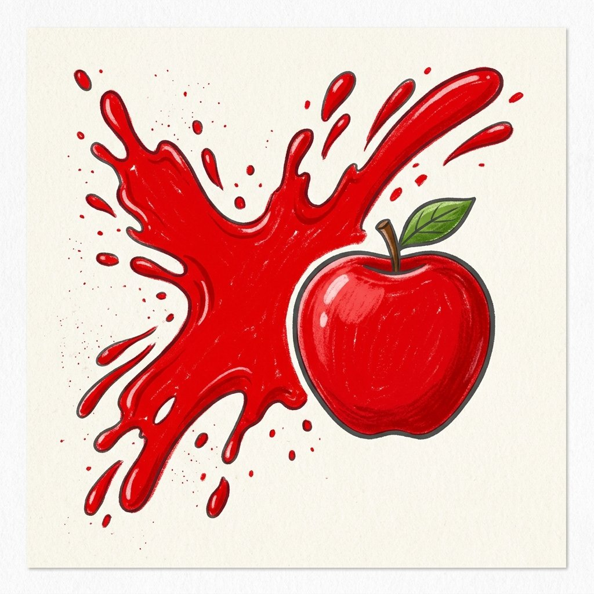
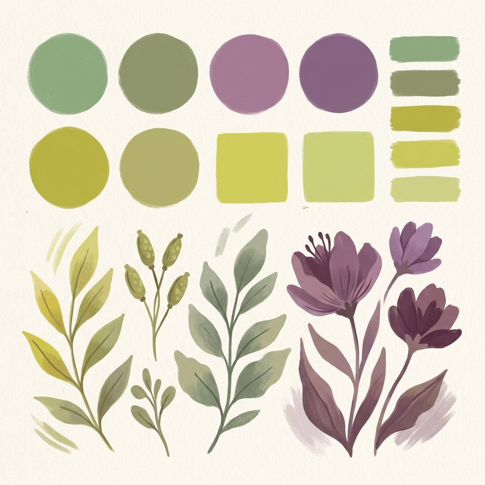
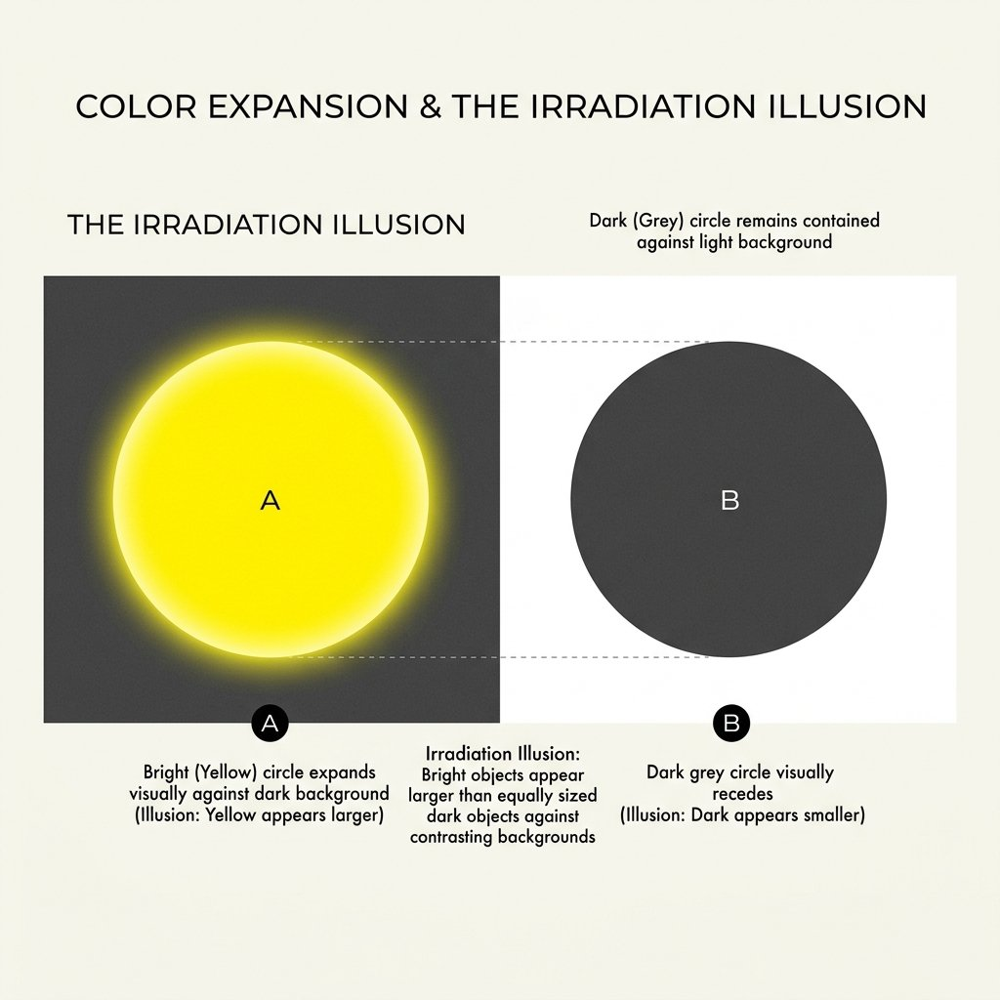
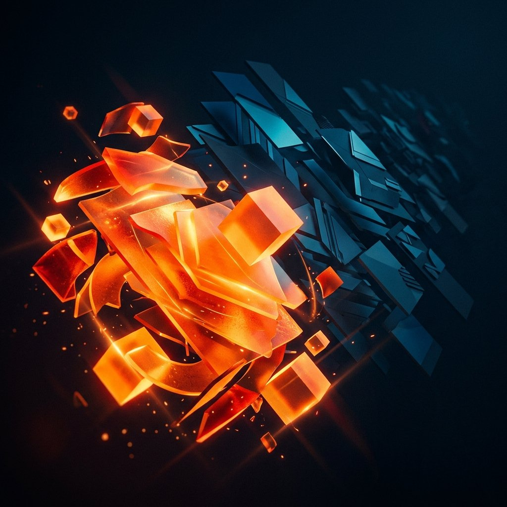

単元1: 色の三属性（要素）と三原色
色の表し方や混色の仕組みなど、美術のペーパーテストで最も配点が高くなりやすい「色彩理論の基本」を整理します。色の3つの要素（三属性）や色相環、光と絵の具の混色の違いを完璧にマスターしましょう！
1. 色の三属性（色の3大要素）
すべての色は「3つの属性（特徴）」で表すことができます。テストではそれぞれの言葉の定義が穴埋め問題として非常によく出題されます。

色の三属性：色相、明度、彩度の関係図。
- 色相（しきそう）：赤・黄・青などの色味や色合いのこと。
- 明度（めいど）：色の明るさの度合いのこと。（白が最も高く、黒が最も低い）
- 彩度（さいど）：色の鮮やかさの度合いのこと。（濁りのない原色ほど高い）
- 有彩色（ゆうさいしょく）：赤、青、黄のように、少しでも色味を持つすべての色。（色相・明度・彩度のすべてを持つ）
- 無彩色（むさいしょく）：白、黒、灰色のように、色味を全く持たない色。（明度のみを持ち、色相と彩度は持たない）
- 純色（じゅんしょく）：各色相の中で、最も彩度が高い（最も鮮やかな）色のこと。

2. 色相環と補色（ほしょく）
色相の変化を順に並べて円環状にしたものを「色相環（しきそうかん）」と呼びます。

色相環で向かい合うペアが「補色」です。
- 補色（ほしょく）：色相環において、正反対（向かい合う位置）にある色の組み合わせのこと。
- 例：赤 と 青緑
- 例：紫 と 黄緑
- 例：黄 と 青紫
💡 補色の関係にある色同士を隣り合わせに置くと、お互いの色を引き立て合って非常に鮮やかに見えます（補色対比）。しかし、絵の具で混ぜ合わせると、お互いの色を打ち消し合って黒に近い濁った灰色になります。
3. 絵の具の混色と光の混色（三原色）
混色には、色を混ぜるほど「暗くなる」ものと、「明るくなる」ものの2つの仕組みがあります。
- 色を重ねたり混ぜたりするほど、光が吸収されて暗く（明度が低く）なる混色。
- 絵の具の三原色：シアン・マゼンタ・イエロー（黄）。
- 三原色をすべて同じ割合で混ぜ合わせると「黒」（理論上）になります。

- テレビ画面や照明のように、光を重ねるほど明るく（明度が高く）なる混色。
- 光の三原色：赤（レッド）・緑（グリーン）・青（ブルー）。
- 光の三原色をすべて重ねると「白」になります。

4. 色彩の感情と機能的効果
色が人間に与える心理的な影響や効果について整理します。
① 暖色・寒色・中性色
- 暖色（だんしょく）：赤・橙・黄など、暖かさを感じさせる色。
- 寒色（かんしょく）：青・青緑など、冷たさを感じさせる色。
- 中性色（ちゅうせいしょく）：緑・紫など、暖かさも冷たさも感じさせない色。

② 膨張色と収縮色
- 膨張色（ぼうちょうしょく）：同じ面積でも大きく見える色。明度の高い（明るい）色が該当します。
- 収縮色（しゅうしゅくしょく）：同じ面積でも小さく引き締まって見える色。明度の低い（暗い）色が該当します。

③ 進出色と後退色
- 進出色（しんしゅつしょく）：背景から前に飛び出して、近くにあるように見える色。暖色系や彩度の高い（鮮やかな）色が進出しやすいです。
- 後退色（こうたいしょく）：奥に引っ込んで、遠くにあるように見える色。寒色系や彩度の低い（くすんだ）色が後退しやすいです。

🔥 定期テスト対策・暗記のコツ
① 三属性の「明るさ」「鮮やかさ」のひっかけ
「明度は明るさ」「彩度は鮮やかさ」です。テストでここを逆にして選択させる問題や、記述問題が頻出します。「明」は明るい、「彩」は色彩の鮮やかさと文字の意味を結びつけて覚えましょう。
② 混色の名前と三原色の対応
「絵の具 ➔ 混ぜるほど引かれる（暗くなる）➔ 減法混色」「光 ➔ 混ぜるほど足される（明るくなる）➔ 加法混色」です。
また、絵の具の三原色は「赤・青・黄」と答えてしまうミスが多いですが、正しくは「マゼンタ・シアン・黄（イエロー）」ですので、しっかり英語名で暗記しましょう。
③ 紫の補色は黄緑！
テストで非常によく聞かれる補色のペアが「紫」と「黄緑」です。色相環の正反対の位置を頭に描いておきましょう。